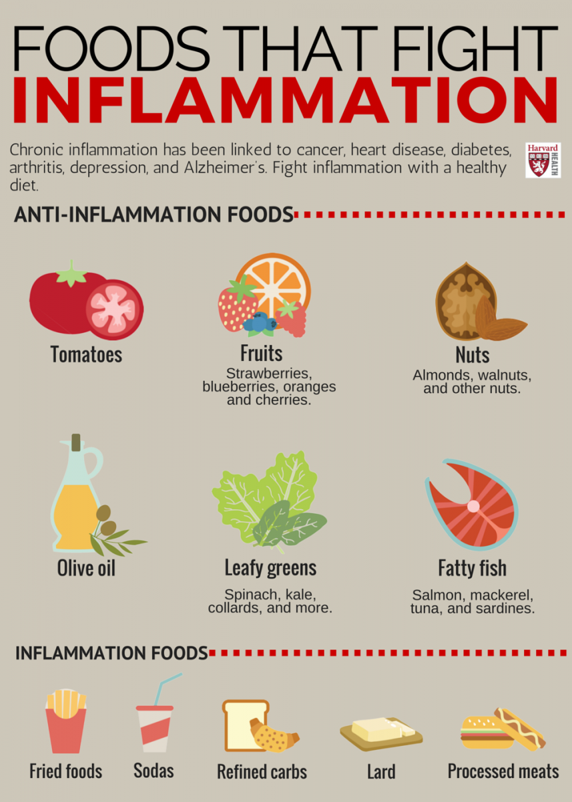

Whole foods nutrition is the foundation of optimal health. Unlike processed foods, whole foods provide the nutrients, fiber, and phytonutrients our bodies need to thrive. Research from Harvard Medical School and leading neuroscientists like Dr. Andrew Huberman consistently demonstrates that what we eat directly impacts our physical health, mental clarity, and emotional well-being.
The Science Behind Nutrition
According to research from Harvard T.H. Chan School of Public Health, a diet rich in whole foods can reduce chronic inflammation, support cardiovascular health, and promote longevity. Dr. Andrew Huberman's research emphasizes the gut-brain axis—the bidirectional communication between our digestive system and brain—highlighting how nutrition directly affects mood, cognition, and overall mental health.
Key Principles of Holistic Nutrition:
Anti-Inflammatory Foods
Leafy greens (spinach, kale, arugula)
Fatty fish rich in omega-3s (salmon, sardines)
Berries (blueberries, strawberries, raspberries)
Nuts and seeds (walnuts, chia seeds, flaxseeds)
Gut-Healthy Foods
Fermented foods (sauerkraut, kimchi, kefir)
Prebiotic fiber (garlic, onions, asparagus)
Probiotic-rich yogurt and kombucha
Diverse plant foods for microbiome diversity
High Protein & Fiber
Legumes (lentils, chickpeas, black beans)
Whole grains (quinoa, oats, brown rice)
Lean proteins (chicken, turkey, tofu)
Vegetables high in fiber (broccoli, Brussels sprouts)
Foods That Fight Inflammation
Chronic inflammation has been linked to numerous health conditions including heart disease, diabetes, arthritis, and Alzheimer's disease. Harvard Health Publishing identifies specific foods that can help combat inflammation naturally.

Source: Harvard Health Publishing - Foods that Fight Inflammation
The Gut Microbiome Connection
Dr. Andrew Huberman's podcast episodes on gut health emphasize that our gut microbiome—the trillions of bacteria living in our digestive tract—plays a crucial role in immune function, neurotransmitter production, and even mood regulation. Supporting a healthy microbiome through whole foods is one of the most powerful interventions for overall health.
Huberman Lab Key Takeaways:
Consume 30+ different plant foods per week for microbiome diversity
Include fermented foods daily to reduce inflammatory markers
Prioritize fiber intake (25-35g daily) for gut bacteria nourishment
Avoid ultra-processed foods that disrupt gut barrier function
Consider the timing of meals for optimal digestive health
Learn More: Huberman Lab on Nutrition
Watch this insightful episode from the Huberman Lab podcast where Dr. Andrew Huberman discusses how foods and nutrients control our moods, energy levels, and overall health:
Dr. Andrew Huberman discusses whole, unprocessed foods and their impact on cellular function and longevity
Interactive Nutrition Data Dashboard
Explore this interactive Tableau visualization to understand the nutritional composition of various foods, including calories, macronutrients, and meal timing considerations:
Trusted Resources
Continue your nutrition education journey with these evidence-based resources:
Huberman Lab Podcast
Dr. Andrew Huberman's science-based podcast covering nutrition, neuroscience, and health optimization